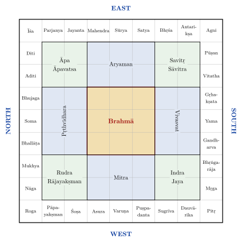
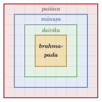
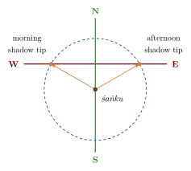

Chapter 2: Vāstuśāstra: The Principles of the Texts¶
2.1 What the Texts Mean by Vāstu¶
The word vāstu (from the root vas, “to dwell”) means a site or a dwelling. In the technical literature it has a wide meaning. The Mayamata and the Mānasāra distinguish four kinds of vāstu: the ground (bhūmi), which is the principal one, and the things built or placed on it: buildings (harmya), vehicles (yāna) and seats or beds (śayana) (Dagens 1994; Acharya 1934). Vāstuśāstra or vāstuvidyā is therefore the knowledge of how to choose, prepare and lay out a site and how to build on it, from a village or town to a temple, a house, a gateway or a piece of furniture.
The oldest systematic account is chapter 53 of Varāhamihira’s Bṛhatsaṃhitā (6th century CE), which deals with house sites (Bhat 1981); chapter numbers in this volume follow Bhat’s edition, and some editions number these chapters one lower. The Mayamata, the Mānasāra, Bhoja’s Samarāṅgaṇasūtradhāra and the architectural chapters of the āgamas and Purāṇas develop the same themes at much greater length. The texts share a common core, but they differ in detail, in technical terms and in the forms of building they describe, and they were written over a period of a thousand years in different regions (Chapter 1). What follows describes that common core and notes the main variations.
2.1.1 The Contents of a Vāstu Chapter: the Bṛhatsaṃhitā, Chapter 53¶
Varāhamihira’s chapter on vāstuvidyā gives a good idea of what a vāstu text contains (Bhat 1981). After a brief statement that the knowledge has come down from Brahmā through a succession of sages, it gives the dimensions of houses for kings, princes, ministers, officials and the four varṇas, and the proportions of their halls; it then tells the myth of the vāstupuruṣa, describes the 81- and 64-square grids and the deities who occupy them, and warns against injuring the vulnerable points of the grid. It discusses the effects of doors in different positions and of obstructions in front of them; the trees that may or may not grow near a house, milky and thorny trees being generally inauspicious; the shape and slope of sites, and the signs and tests of good soil; the auspicious times for beginning construction; and omens observed during the work. The chapter combines in a single sequence social rules, practical advice, astrology and omen-lore, and it was this combination that later texts expanded.
2.1.2 The Larger Treatises¶
The Mayamata, in thirty-six chapters, and the Mānasāra, in seventy, follow a similar plan, moving from the general to the particular (Dagens 1994; Acharya 1934). They begin with the qualifications of the architect and the system of measurement; proceed to the examination of the site, the determination of the directions, the laying out of the grid and the offerings to its deities; then describe settlements of different kinds, from villages to royal capitals; then houses, temples of one to twelve storeys and their parts (bases, pillars, entablatures, superstructures), gateways, halls and enclosures; and finally furniture, vehicles, liṅgas and images. Large parts of both texts consist of lists of named variants, each defined by its proportions or its ornaments. They are working references rather than continuous expositions, and they presuppose a reader who already knew the craft.
How to Read the Vāstu Texts
The vāstu texts mix several kinds of instruction: practical surveying and construction; rules of proportion; ritual; and astrological and omen-based predictions of good or bad fortune. They do not distinguish between these, and modern readers should not assume that a rule which makes practical sense (raise a house above flood level) and one which is astrological (the remainder of a calculation determines the owner’s luck) rest on the same kind of evidence. In this book the prescriptions are reported as what the texts say.
2.2 The Vāstupuruṣa¶
2.2.1 The Myth¶
The Bṛhatsaṃhitā (53.2–3) tells briefly that a certain being once arose whose body blocked heaven and earth. The gods seized it and threw it face downwards onto the ground, and each god remained in the place where he had held it down; the Creator then made this being, filled with the gods, the “man of the site” (vāstunara, vāstupuruṣa). Other texts give longer versions. In the Matsya Purāṇa (ch. 252), for example, the being is born from a drop of Śiva’s sweat during his battle with the demon Andhaka, devours everything until the gods pin it down, and is granted by the gods the right to be worshipped, and fed with offerings, whenever a building is begun.
The myth explains two features of practice. First, a site is never neutral: it is occupied, and must be propitiated by an offering (vāstubali) and rites of pacification (vāstuśānti) before work begins and when a building is first occupied. Second, the gods who hold the being down each have a place on the site, so that the site can be drawn as a diagram of the being’s body and the gods who occupy it: the vāstupuruṣamaṇḍala.
2.2.2 The Grid¶
The maṇḍala is a square divided into a grid of smaller squares (pada). The Mayamata and the Mānasāra name thirty-two grids, beginning with a single square and increasing by one row and one column at a time; the first ten are shown in Table 2.1 (Dagens 1994; Acharya 1946). Most of the theory concerns two grids, the 64-square maṇḍūka (also called caṇḍita) and the 81-square paramaśāyika. The Bṛhatsaṃhitā describes both, and several texts prefer the 64-square grid for temples and the 81-square grid for houses and settlements, although usage is not uniform.
| Name | Grid | Number of squares |
|---|---|---|
| sakala | 1 \(\times\) 1 | 1 |
| pecaka | 2 \(\times\) 2 | 4 |
| pīṭha | 3 \(\times\) 3 | 9 |
| mahāpīṭha | 4 \(\times\) 4 | 16 |
| upapīṭha | 5 \(\times\) 5 | 25 |
| ugrapīṭha | 6 \(\times\) 6 | 36 |
| sthaṇḍila | 7 \(\times\) 7 | 49 |
| maṇḍūka (caṇḍita) | 8 \(\times\) 8 | 64 |
| paramaśāyika | 9 \(\times\) 9 | 81 |
| āsana | 10 \(\times\) 10 | 100 |
2.2.3 The Forty-Five Deities¶
In both the 64- and 81-square grids the texts place forty-five deities. Brahmā occupies the centre: nine squares in the 81-square grid and four in the 64-square grid. Around him are four principal deities: Aryaman to the east, Vivasvat to the south, Mitra to the west and Pṛthvīdhara to the north. In the corners of this inner zone are eight lesser deities in pairs (in the commonest list, Āpa and Āpavatsa in the north-east, Savitṛ and Sāvitra in the south-east, Indra and Jaya in the south-west, Rudra and Rājayakṣman in the north-west). The outer ring of thirty-two squares is occupied by thirty-two deities, eight to each side, beginning with Īśa (Śikhin) in the north-east corner and proceeding clockwise through the east, where Mahendra (in some lists called Indra) occupies the fourth square, and then the south, west and north (Figure 2.1) (Bhat 1981; Kramrisch 1946). The names, and sometimes the positions, differ slightly from text to text.

The vāstupuruṣa himself is imagined lying across the grid with his head in the north-east and his feet in the south-west; the deities are said to rest on parts of his body. The Bṛhatsaṃhitā accordingly warns that an injury to the owner will follow if the corresponding part of the vāstupuruṣa is “struck” by a post, a wall or a nail.
2.2.4 Zones of the Grid¶
The Mayamata and Mānasāra also divide the grid into concentric zones, which they use when placing buildings in a village, a temple enclosure or a large house: the central squares of Brahmā (brahmapada); around them the zone of the gods (daivika); then the zone of men (mānuṣa); and at the edge the zone of the piśācas, or goblins (paiśāca). The principal shrine or the central courtyard is placed in or near the centre; dwellings in the middle zones; and service buildings, and the shrines of lesser and protective deities, towards the edge (Dagens 1994). See Figure 2.2.

2.3 Directions¶
2.3.1 The Guardians of the Directions¶
The eight directions are each ruled by a guardian (dikpāla). The list is standard across the Brahmanical texts, although the north is assigned to Kubera in some and to Soma in others (Table 2.2).
| Direction | Sanskrit name | Guardian |
|---|---|---|
| East | pūrva, prācī | Indra |
| South-east | āgneya | Agni |
| South | dakṣiṇa | Yama |
| South-west | nairṛta | Nirṛti |
| West | paścima | Varuṇa |
| North-west | vāyavya | Vāyu |
| North | uttara | Kubera (or Soma) |
| North-east | aiśānya | Īśāna |
2.3.2 What the Texts Prescribe¶
The texts attach good and bad consequences to directions. East is generally the most favoured direction for the entrance of a temple, since the deity faces the rising sun, and for many houses; north is also favoured. The south, ruled by Yama, the god of death, is generally avoided for main entrances, although temples of some deities, and houses in particular situations, may face south or west. The Bṛhatsaṃhitā goes further: it assigns a specific result to a door placed in each of the thirty-two squares of the outer ring, so that a door in some squares brings wealth or favour, and in others fire, quarrels or loss (Bhat 1981). Rooms and activities are assigned to directions in house plans, though the assignments differ between texts and regions (Chapter 10).
These are rules of auspiciousness. Some of them coincide with good practice in a hot climate (an east-facing entrance catches morning light; a house closed to the south-west is shaded from the hot afternoon sun), and modern writers often explain them in these terms. But the texts themselves give no climatic reasons, and the same rules were applied, with little change, from the Himalaya to the far south.
2.3.3 The Five Elements in Modern Vāstu¶
Many modern books on vāstu associate the five elements (pañcamahābhūta) with particular directions: water with the north-east, fire with the south-east, earth with the south-west, air with the north-west and space with the centre. This scheme is a modern systematisation. The classical texts know the five elements, and the association of the south-east with Agni and the north-west with Vāyu follows from the guardians of those directions; but the full directional scheme of the elements, and the advice derived from it, is not found in the Bṛhatsaṃhitā, the Mayamata or the Mānasāra.
2.4 Orientation: Finding the Directions¶
Before a building is laid out its axes must be fixed. The texts describe the gnomon (śaṅku) method, which goes back to the Śulbasūtras: a vertical peg is set up on levelled ground and a circle drawn around it. The points where the tip of the shadow touches the circle in the morning and in the afternoon are marked; the line joining them runs east–west, and a line perpendicular to it, constructed with cords, runs north–south (Sen and Bag 1983; Dagens 1994). The method gives the cardinal directions to within a small error, which arises because the sun’s declination changes slightly between morning and afternoon; some texts add refinements. The gnomon was also the basic instrument of Indian astronomy (see Volume 12, Khagola Jyotiṣa). See Figure 2.3.

Many Indian temples are aligned within a degree or two of the cardinal directions; others deviate considerably, sometimes because they follow a river, a street or an older building, and sometimes, it has been argued, because they were aligned on a particular sunrise. Archaeoastronomical studies have proposed intentional solar alignments at a number of sites (Malville and Gujral 2000). Popular claims that a given temple is lit by the sun on a particular day should, however, be checked against measurement: some are correct, while others are traditions that have not been confirmed.
2.5 Choosing and Testing the Site¶
The texts give detailed rules for the selection of a site (bhūparīkṣā). A good site is square or rectangular, level or sloping gently towards the north or east, with good soil and a supply of water, and free of bones, ant-hills, thorny trees and other inauspicious things. The soil is examined for colour, smell, taste and texture, and the texts assign soils of different colours to the four varṇas: white soil to brāhmaṇas, red to kṣatriyas, yellow to vaiśyas and black to śūdras. This allocation is found in the Bṛhatsaṃhitā and the Mayamata; the place of caste in the texts is discussed in Chapter 1 (Section 1.6) and in Chapter 10 (Section 10.3).
Several practical tests are described, with some variation between texts (Bhat 1981; Dagens 1994):
The pit test. A pit is dug, for example a cubit deep, and refilled with the earth taken from it. If earth is left over, the site is excellent; if it just fills the pit, middling; if the pit is not filled, the site is bad.
The water test. The pit is filled with water and observed after a fixed interval; if the water has not drained away, the site is good.
Ploughing and sowing. The site is ploughed and seeds are sown; the speed with which they sprout is taken as a sign of the quality of the ground.
Modern commentators often point out that these tests give rough information about the density, drainage and fertility of the soil, which is true; but in the texts they are omens as much as engineering tests, and their outcome is expressed in terms of good or bad fortune for the owner.
2.6 Measurement and Proportion¶
2.6.1 Kinds of Measurement¶
The Mānasāra and Mayamata distinguish six kinds of measurement: māna, pramāṇa, unmāna, parimāṇa, upamāna and lambamāna. Acharya and Dagens explain them as, approximately, height, breadth, thickness, girth, the measurement of intervals (for example between pillars) and measurement along plumb lines; the precise meaning of each term varies between texts and contexts (Acharya 1946; Dagens 1994). Buildings are dimensioned in whole numbers of hastas and aṅgulas (Chapter 1), and their parts are proportioned to a module, often the width of the sanctum or of a pillar.
2.6.2 Proportions of Height to Breadth¶
The southern texts give five classes of proportion of height to breadth for buildings and their parts, rising by quarters from equal height and breadth to a height twice the breadth, each class bearing an auspicious name. Similar graded series of proportions are used for pillars, doorways and storeys. These are rules of thumb that ensured consistency within a workshop tradition; they do not form a single system based on “harmonic” or musical ratios, and the frequently repeated claim that Indian temples were designed on the golden ratio has no basis in the texts or in measured surveys.
2.6.3 The Āyādi Calculations¶
A distinctive feature of the southern texts is a set of calculations, usually called āyādi (“gain and the rest”) or ṣaḍvarga (“the six classes”), which test the chosen dimensions for auspiciousness. A dimension, usually the length, breadth or perimeter in hastas and aṅgulas, is multiplied by a fixed number and divided by another; the remainder gives a value for “gain” (āya), “loss” (vyaya), “origin” (yoni), lunar mansion (nakṣatra), weekday (vāra) and portion (aṃśa). The eight yonis are named after the flag (dhvaja), smoke (dhūma), lion (siṃha), dog (śvan), bull (vṛṣa), ass (khara), elephant (gaja) and crow (kāka), and the odd-numbered ones are auspicious. Gain should exceed loss. If the result is unfavourable the dimension is altered by a few aṅgulas and recalculated (Dagens 1994). The multipliers and divisors differ from text to text, and the calculations are still used by traditional builders in Kerala and Tamil Nadu.
These calculations belong to astrology rather than to geometry or engineering. They are of historical interest as evidence of the close relation between the builders’ craft and jyotiṣa, but they have no bearing on the strength, comfort or performance of a building.
2.7 Lines, Vulnerable Points and Defects¶
2.7.1 Lines and Marmans¶
The lines of the grid, and the diagonals drawn across it, are described in the texts as “veins” (sirā) or “beams” (vaṃśa) of the vāstupuruṣa, and the points where the principal lines cross as his vulnerable points (marman), a term also used in medicine and in the martial arts for vulnerable points of the body. The Bṛhatsaṃhitā and the Mayamata forbid placing a pillar, a door or a wall on these points, and predict misfortune for the owner if this is done (Bhat 1981; Dagens 1994). In practice the rule, combined with the grid, helped fix the positions of pillars and doors in a consistent way; but the texts present it as a matter of injuring or not injuring the being who lies beneath the building.
2.7.2 Obstructions and Defects¶
The texts list many defects (doṣa) of a site or building. One of the most often mentioned is vedha, “piercing”: a tree, a post, a corner of another building, a well, a drain or a road directly in front of a door is said to “pierce” it and bring misfortune; the Bṛhatsaṃhitā exempts obstructions that stand at a sufficient distance from the door. Other defects include irregular plots, plots that slope the wrong way, and buildings that rise higher on one side than the other. The remedies the texts prescribe are mostly ritual: rites of pacification, offerings and the installation of protective images. Modern “vāstu remedies” (mirrors, pyramids, coloured lights, crystals) are recent inventions.
2.8 Trees, Gardens and the House¶
The vāstu texts pay attention to the trees and plants around a house. The Bṛhatsaṃhitā lists trees that are auspicious near a dwelling and others, such as thorny trees and trees with milky sap, that should be avoided, and devotes a separate chapter (ch. 55, on vṛkṣāyurveda, “the science of the life of trees”) to the planting of gardens: choosing soil, propagating trees by seeds and cuttings, watering, and treating tree diseases (Bhat 1981). Water near the house, in tanks, wells and garden pools, is recommended, and the planting of trees along roads and near tanks is praised as a meritorious act in many inscriptions. In the house itself, the sacred basil (tulasī) planted in a raised stand in the courtyard is a common feature of Hindu homes. These prescriptions reflect a real attention to the setting of buildings, though again expressed largely in terms of auspiciousness.
2.9 Vāstu, Astrology and Ritual¶
Every stage of building, in the texts, has its ritual and its auspicious moment (muhūrta), determined by astrology: the testing and ploughing of the site, the offering to the vāstupuruṣa, the laying of the first stones or bricks (śilānyāsa, iṣṭakānyāsa), the deposit of a sealed casket of precious materials in the foundations (garbhanyāsa), the raising of the door-frame and the main pillar, the placing of the crowning element, and the first entry of the owner (gṛhapraveśa) or the consecration of the temple. The Mayamata devotes separate chapters to several of these rites. They show that the vāstu texts are part of the larger world of ritual and astral science, and that their authors saw building as a sacred undertaking from beginning to end.
2.10 The Grid in Practice¶
How far were real buildings laid out on the vāstupuruṣamaṇḍala? Michael Meister and others have analysed the plans of northern temples and shown that many of them can be explained by grids of squares, with the sanctum, walls and projections set out on the lines of a grid of 64 or 81 squares, or on related subdivisions, and with diagonals and rotated squares used to fix the positions of projections. Adam Hardy has shown how the plans and elevations of temples were generated by combining and repeating a small set of elements according to rules of proportion (Hardy 2007). These studies suggest that the grid was a real working tool of the builders, used to proportion buildings and to coordinate the work of large teams, and not only a symbol. But they also show that real plans depart from the texts in many ways, and that no single grid explains all buildings. The temple’s ritual centre, the sanctum, and its geometric centre do not always coincide, and in large complexes, such as South Indian temple towns, the maṇḍala is at most a guiding idea.
2.11 Orientation in Other Traditions¶
The vāstu texts discussed in this chapter belong to the Brahmanical tradition, and their deities and rites are Hindu. Other communities had their own rules. Jain builders used vāstu texts of their own, such as Ṭhakkura Pherū’s Vatthusāra (early 14th century) in Prakrit, which adapt the same body of knowledge to Jain needs, and Jain temples follow many of the same procedures. Buddhist monasteries and stūpas followed rules set out in the monastic codes (vinaya) and in later Tantric manuals, which prescribe the layout of a monastery and the rituals for consecrating a site. The orientation of a mosque is fixed by a different principle altogether: it must face the qibla, the direction of the Kaʿba at Mecca, which from India is roughly west (Chapter 6). Medieval Islamic astronomers developed methods for computing the qibla, and in practice Indian mosques are aligned more or less to the west, sometimes deviating considerably from the true direction. Hindu, Jain and Muslim builders often shared workshops and techniques while following these different rules.
2.12 Regional Traditions¶
Although the vāstu texts share a common core, each region developed its own tradition, adapted to its materials, climate and forms of building.
-
Tamil Nadu and the South: the Mayamata, the Mānasāra, the Kāśyapaśilpa and the architectural chapters of the Śaiva āgamas describe the Drāviḍa temple and South Indian houses and settlements.
-
Kerala: the Tantrasamuccaya of Cēnnās Nārāyaṇan (15th century), the Śilparatna and the Manuṣyālayacandrikā (on houses), all in Sanskrit, describe a timber architecture with steep sloping roofs, adapted to the heavy monsoon. Carpentry (taccuśāstram in Malayalam) has its own tradition and vocabulary.
-
Odisha: the Śilpaprakāśa and Bhuvanapradīpa use the Odishan terminology of the rekhā and pīḍhā deuḷa (Chapter 4) (Boner and Rath Śarmā 1966).
-
Western India: the Aparājitapṛcchā and the works of Maṇḍana (15th century), still used by the Sompurā builders, describe the Māru-Gurjara temple, as well as houses, palaces and stepwells.
-
Central India: Bhoja’s Samarāṅgaṇasūtradhāra describes, among other things, the bhūmija temple type found in Paramāra territory.
2.13 Geometry and the Builder¶
The geometry used in laying out buildings was that of the cord and peg: squares and rectangles, circles, the subdivision of a square into a grid, diagonals, and the rotation of squares to produce stellate plans. The Śulbasūtras show that these constructions were known in the Vedic period, together with a good approximation to \(\sqrt{2}\), given in Baudhāyana’s Śulbasūtra as \(1 + \frac{1}{3} + \frac{1}{3 \cdot 4} - \frac{1}{3 \cdot 4 \cdot 34} \approx 1.414216\) (Sen and Bag 1983; Plofker 2009). Medieval builders used similar methods to set out the complex plans of northern temples, in which the projections of the walls are derived from rotated squares and from proportional subdivisions of the plan (Hardy 2007). Their skill was practical and geometrical; it did not depend on algebra or on any knowledge of modern physics.
2.14 The Texts in Print and in Teaching¶
Until the 19th century the vāstu texts circulated in manuscripts, copied in families of architects and in temple and monastic libraries, often in regional scripts and with local variations; some survive only in a few copies, and many are incomplete or corrupt. From the early 20th century, the principal texts were printed in series such as the Trivandrum Sanskrit Series and the Gaekwad’s Oriental Series, and translated: P. K. Acharya’s edition and translation of the Mānasāra appeared between 1927 and 1934, Bruno Dagens’s edition and translation of the Mayamata in the 1970s and 1980s, with a revised English version in 1994 (Acharya 1934; Dagens 1994). Many other texts remain unedited or available only in uncritical editions. Printed editions changed the way the texts were used: traditional architects who had relied on family manuscripts and oral instruction began to consult printed books, and a new class of readers, including engineers, consultants and the general public, gained access to them.
Today the traditional disciplines are taught in a few institutions, such as the Government College of Architecture and Sculpture at Mamallapuram, alongside family apprenticeship, and vāstu is the subject of short courses and a large popular literature in English, Hindi and other languages, most of which follows the modern scheme described in this chapter rather than the classical texts. University departments of architecture teach the history of Indian architecture, including the texts, as part of their curricula.
2.15 Reading Vāstu Today¶
Vāstu has enjoyed a large revival since the 1980s, especially among urban house-buyers, builders and property developers, in India and in the diaspora. Builders advertise “vāstu-compliant” apartments; consultants advise on the orientation of plots, the position of rooms and the placement of furniture; and books, magazines and websites offer remedies for “vāstu defects”. Vibhuti Chakrabarti, in the one scholarly study of this revival, has examined how architects, traditional sthapatis and consultants reinterpreted the texts in the late 20th century, and how far their readings departed from them (Chakrabarti 1998). Much of what is now sold as vāstu differs from the classical texts in content and spirit. This section sets out the case once, for the whole volume; later chapters refer back to it. Some of the claims most often made are examined in Table 2.3, and two general points need to be made clearly.
| Claim | Assessment |
|---|---|
| Vāstu rules work by aligning a building with the earth’s magnetic field or with “cosmic energy”. | Not found in the classical texts, which speak of deities, auspiciousness and omens. The earth’s magnetic field is weak and has no known effect of this kind on occupants; “cosmic energy” is not a defined physical quantity. |
| One should sleep with the head to the south because of the magnetic field. | Rules about the direction of the head in sleep are found in traditional texts as rules of auspiciousness; the magnetic explanation is modern and has no experimental support. |
| The north-east is the “water” corner because groundwater lies higher there. | The association of directions with the five elements is a modern scheme (Section 2.3); groundwater levels depend on local geology and topography, not on compass direction. |
| Temples were designed on the golden ratio or on Fibonacci numbers. | Not supported by the texts, which use whole-number ratios and grids, nor by measured surveys of temples. |
| Following vāstu guarantees health, wealth or harmony. | No controlled study supports this; outcomes depend on many factors. The classical texts themselves frame such results as predictions of fortune. |
| Vāstu “remedies” (mirrors, pyramids, crystals, coloured lights) correct defects. | These remedies are modern inventions; the classical texts prescribe rituals of pacification. |
First, the classical texts do not claim that buildings work through “cosmic energy”, magnetic fields, electromagnetism or the earth’s rotation, and these ideas have no scientific basis as explanations of vāstu rules. There is no reliable evidence that the orientation of a door, the position of a kitchen or the shape of a plot, in itself, affects the health, wealth or happiness of the occupants. Statements to the contrary are claims made by modern consultants, not findings of research.
Secondly, some traditional practices, both those recorded in the texts and those found in vernacular building, do make sense in terms of climate and construction: shaded verandahs, courtyards that help ventilate deep houses, thick walls in hot dry regions, raised plinths in wet ones, and the orientation of openings to catch breezes and avoid the low western sun. These can be studied and used on their own merits, with the methods of building science (Krishan et al. 2001). It may help to compare vāstu with other traditions of geomancy, such as Chinese fengshui, which likewise combine practical knowledge of sites and climate with cosmology, divination and rules of auspiciousness, and which have likewise been revived and commercialised in modern times. Such traditions are valuable objects of historical and anthropological study, and they can preserve useful local knowledge; but they are not, and do not need to be, sciences in the modern sense.
Respect for the tradition is better served by reading the texts for what they are, a historical record of the knowledge and beliefs of Indian builders, than by attributing to them a modern science they did not contain.
Further Reading¶
-
Dagens, Bruno. 1994. Mayamatam: Treatise of Housing, Architecture and Iconography. 2 vols. Indira Gandhi National Centre for the Arts and Motilal Banarsidass.
-
Acharya, Prasanna Kumar. 1946. An Encyclopaedia of Hindu Architecture. Mānasāra Series 7. Oxford University Press.
-
Bhat, M. Ramakrishna. 1981. Varāhamihira’s Bṛhat Saṃhitā. 2 vols. Motilal Banarsidass.
-
Kramrisch, Stella. 1946. The Hindu Temple. 2 vols. University of Calcutta.
-
Plofker, Kim. 2009. Mathematics in India. Princeton University Press.
-
Acharya, Prasanna Kumar. 1934. Architecture of Mānasāra: Translated from Original Sanskrit. Mānasāra Series 4. Oxford University Press.
-
Malville, John McKim, and Lalit M. Gujral, eds. 2000. Ancient Cities, Sacred Skies: Cosmic Geometries and City Planning in Ancient India. Indira Gandhi National Centre for the Arts and Aryan Books International.
-
Krishan, Arvind, Nick Baker, Simos Yannas, and S. V. Szokolay, eds. 2001. Climate Responsive Architecture: A Design Handbook for Energy Efficient Buildings. Tata McGraw-Hill.